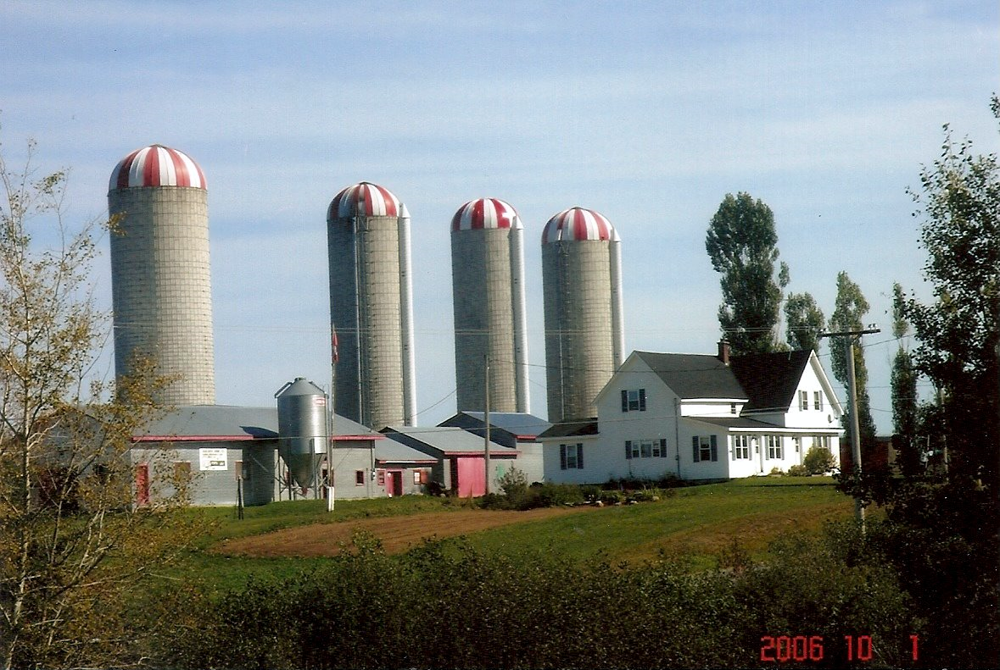
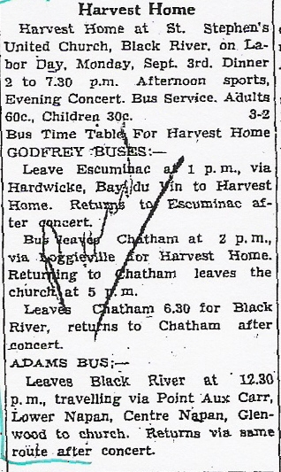

The Family Chronicle
No. 180 December 9, 2009
____________________________________________________________________

Branchview Farm
A Century of Change
On July 21, 1914, Elmer and Jane (Watling) Glendenning purchased the “Jessie MacDonald” property at Little Branch; the property was one-half of the original grant (225 acres) to Alexander MacDonald on June 3, 1812, who on his death, bequeathed half to his daughter, Jessie, and the other half to his son, John. On Jessie’s death, the property had passed to her nephew, Alex MacDonald, who, in turn sold it to my parents.
The original house was a traditional 11/2 story with the gable end toward the road (See far end of house in photo above.) Sometime after 1919, Dad added the ell towards the lane and a full verandah across the front. Lumber for the addition, including hardwood for the floors and pine for the pantry cabinets, was cut on the property. (The part of the verandah across the front of the original house has since been removed.) The back entry was added in recent years.
There was a small barn on the property at time of purchase. Again, probably in the 1920’s, Dad doubled the length of the barn and put a shed along the complete length on the side next the River.
Norman took over the operation of the farm after getting out of the service, and since then has modernized the house, modernized and added to the barn, added the sheds and built the silos. It is certainly the largest dairy farm in the area – and quite an evolution over the years. (Alton and Eric operate the farm today; Norm simply supervises.)
Again, Thanks to Barry MacKenzie

The Family Chronicle (Copyright) is an occasional newsletter published by Don Glendenning and posted on the family website. It is intended to share information about my family, community and the times in which I grew up. While every effort is made to be accurate, errors are likely to occur. Comments, enquiries and information may be sent to 62 Queen Elizabeth Drive, Charlottetown, PEI, C1A 3A9. Tel: 902 892 5859. Email: don@glendenning.net Web: www.glendenning.net/don
The Commercial of September 9, 1943
An advertisement by the W.S. Loggie Co. Ltd included the following guide to buying:
Buy war bonds first
Pay taxes cheerfully
Don’t traffic in rumours
Think twice buy once
Buy dresses at Loggie’s
Stocking up is sabotage
Buy dresses at Loggie’s
Hitler loves a hoarder
Loose buying always loses
Goebbels loves a griper
Only a quisling is chiseling
Waste not, want not
Buy dresses at Loggie’s
And buy more war bonds
Buy carefully
..and the following wedding:
MacLean-Westhaver
A quit but pretty wedding took place at the United Church Manse on Thursday evening, Sept. 2nd, when Winnifred, Geneva, daughter of Mr. and Mrs. Arthur Westhaver of Chatham became the bride of John Wesley, son of Robert MacLean of Black river. The Rev. F. E. MacPherson officiated.
Witnesses to the marriage were Mr. and Mrs. James E. MacDonald of Chatham.
The groom is an employee of the Northumberland Air Observer School. The happy couple will reside in Chatham and their many friends wish them success and happiness.